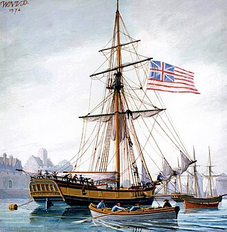
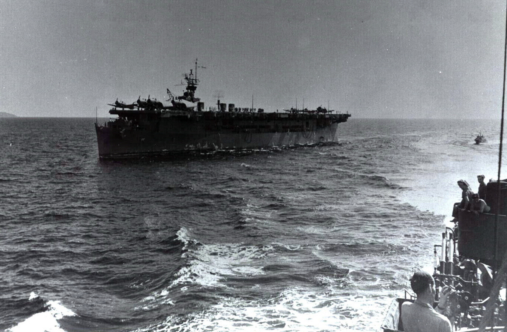
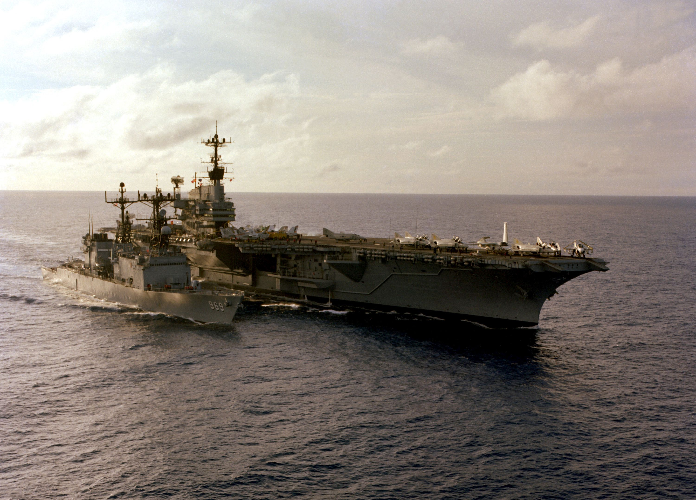
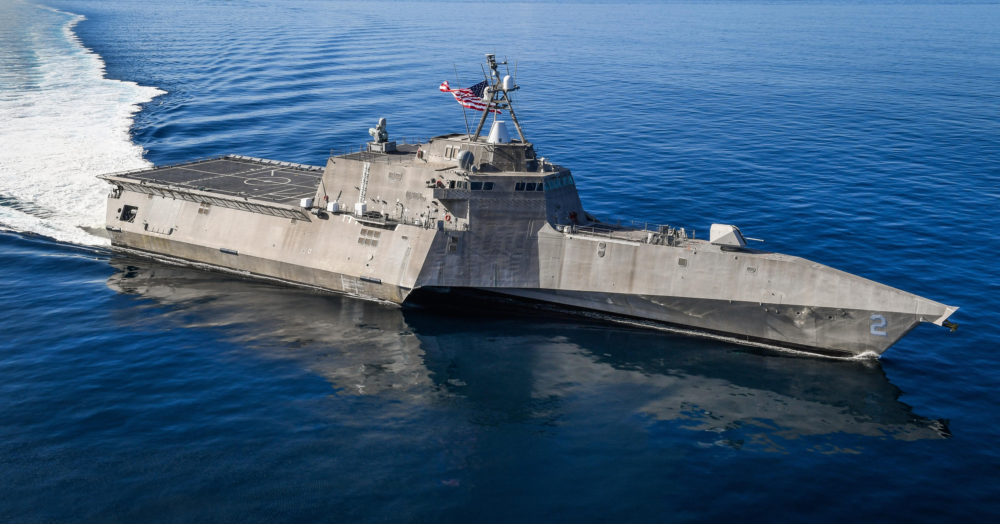

USS Independence (1776)
The first ship named Independence was a sloop-of-war commissioned by the Continental Congress in 1775.
She was built in Baltimore, Maryland, and launched in 1776.
The ship served in the Continental Navy during the American Revolutionary War.

Photo by WNVP 1974
USS Independence (CVL-22)
The second ship named Independence was an aircraft carrier commissioned in 1942.
She served in the Pacific Theater during World War II and was decommissioned in 1946.

The aircraft carrier USS Independence (CVL 22) underway in the Pacific Ocean during World War II.
Official U.S. Navy Photo
USS Independence (CV-62)
The fourth ship named Independence was a Forrestal-class aircraft carrier commissioned in 1959.
She served during the Cold War and was decommissioned in 1998.

The aircraft carrier USS Independence (CV 62) underway in the Atlantic Ocean.
Photo by U.S. Navy
USS Independence (LCS-2)
The fifth ship named Independence is a littoral combat ship commissioned in 2010.
She is currently in active service and is designed for operations close to shore.

The littoral combat ship USS Independence (LCS 2) underway in the eastern Pacific.
Photo by Shannon Renfroe